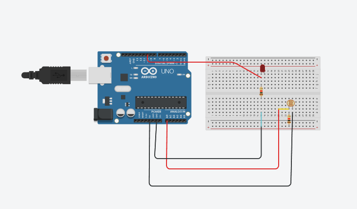

LDR-Based Automatic Light Control
Project Description
This project uses an LDR to detect ambient light and automatically turns lights ON at night and OFF during the day using a relay or LED.
Circuit Diagram

Arduino Source Code
const int LDR_PIN = A0; // LDR connected to Analog Pin A0
const int LIGHT_PIN = 9; // Relay Module or LED connected to Pin 9
int threshold = 500; // Adjust this based on your lighting conditions
void setup() {
pinMode(LIGHT_PIN, OUTPUT);
Serial.begin(9600); // Initialize Serial Monitor
}
void loop() {
int ldrValue = analogRead(LDR_PIN); // Read LDR sensor value
Serial.print("LDR Value: ");
Serial.println(ldrValue); // Print to Serial Monitor
if (ldrValue < threshold) {
digitalWrite(LIGHT_PIN, HIGH); // Turn ON lights (Night)
Serial.println("Lights ON");
} else {
digitalWrite(LIGHT_PIN, LOW); // Turn OFF lights (Daytime)
Serial.println("Lights OFF");
}
delay(500); // Small delay for stability
}